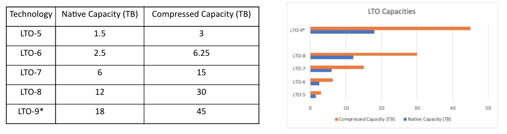
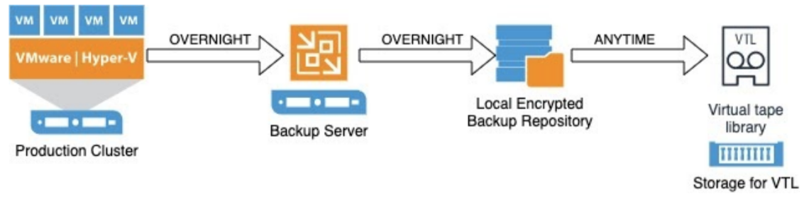
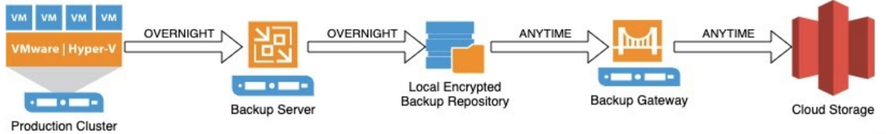
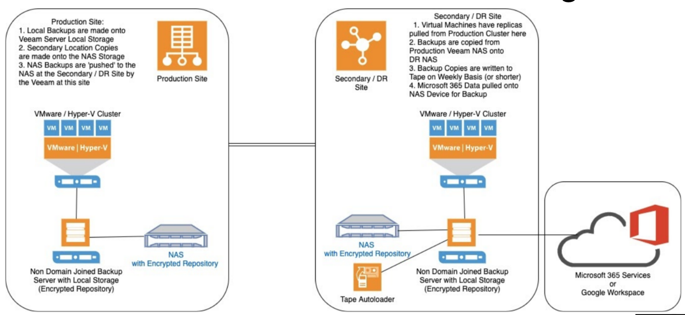

Why should we have offline backups ?
Why offline backups are important
The purpose of an ‘offline backup’ (sometimes called a ‘cold backup’) is to remain unaffected should any incident impact your live environment. You can do this by:
- Only connecting the backup to live systems when absolutely necessary
- Never having all backups connected at the same time (by ensuring at least one of your media locations is on removable devices or in an immutable location on your systems).
Having a set of backups on Offline Media Storage will effectively act as an immutable copy of backup data (especially if you make the Tape Read Only (RO)). This will give you the ability to restore with confidence from a recent point in time backup.
Having Backups completely offline will mean that an attack on your systems will not be able to corrupt the backups on this media.
https://www.ncsc.gov.uk/blog-post/offline-backups-in-an-online-world
- NCSC has seen numerous incidents where ransomware has not only encrypted the original data on-disk, but also the connected USB and network storage drives holding data backups.
Incidents involving ransomware have also compromised connected cloud storage locations containing backups.
The impact that this will have will mean your backups are effectively of no real use so a system recovery will be a lengthy process and expensive in terms of resource and lack of ability to function as a Local Authority.
It is generally considered best practice within the field of backups to keep at least one copy of data in an ‘offline’ storage location.
This is becoming increasingly important now that Cryptolocker Attacks are commonplace.
- The 3-2-1 rule is one to follow:
3 Backups, 2 Locations, 1 Offline Copy
Example - local backup at primary location, replica or 2nd backup location at DR Location and one offline backup (location is unimportant)
With at least one backup offline at any given time, an incident cannot affect all of your backups simultaneously.
It is true that restoration from offline media will be slower compared to a locally connected disk, but if you are using your offline backups to restore your systems then it is assumed you are in the middle of a major outage/disaster/crypto attack and whilst time is important, quality of data is paramount.
Offline backup options
There are three main offline backup approaches open to us, along with the option for immutable storage which may be connected to your systems.
The primary type is Tape. Capacities per tape currently can go up to 30TB with typical compression rates. Autoloaders with multiple drives can vastly increase capacity and reduce time to backup. Tapes should be regularly removed and securely stored, ideally in a different location.
Virtual Tape Libraries (VTL) are increasing in popularity but rely on reliable disk storage behind them, but these cannot be removed from site.
Removable Disks. If your storage requirements for backups is at the lower end of the scale you may be able to use removable storage based on Hard Drives.
Immutable Storage Locations (SAN / Cloud based configurations)
Cloud based storage can be configured to work with on prem backup solutions with ‘Connectors’ or ‘Gateways’.
Offline backup technique
For Tape, Utilising Autoloaders will allow for a larger amount of data to be stored per backup job. The job time can be almost halved with dual drives.
Backup to tape in a virtualised environment is usually made from the primary disk backup which is taken from the live system overnight, and the writing of the backup to tape(s) will happen during the day, and not impact on the live production environment. This technique is referred to as Disk to Disk to Tape. (Physical or Virtual).

For VTL and Immutable cloud locations the final destination would be these in the above diagram.
Implementation
How can I implement offline media?
Tape Autoloaders or Removable Disks can be added to backup servers as additional backup locations.
VTL products will require sufficient additional storage to back the VTL software. They will be presented to the backups servers as additional backup locations.
Cloud Storage Gateways can be added to backup servers to connect your on premise backup server to cloud storage providers (Amazon AWS Storage, Microsoft Azure Storage, etc).
SAN Based Storage will require at the least additional licensing and will be dependent on the hardware vendor and the backup solution that is in place.
Overview schematic of an ideal configuration
In this scenario your offline backups are written to the Tape Autoloader. Other alternatives are Virtual Tape Libraries, Removable drives and immutable storage devices

Veeam has been used in this example as it is the most prevalent technology in use amongst the 29 Councils reviewed.
Arcserve UDP would work in effectively the same manner. SAN Based Snapshot systems (NetApp, Nimble etc) would be different from the technologies illustrated here
Summary
Ensure you have secured your backup systems in line with best practice
Offline backups provide the most secure way of recovering your systems in the event of a ransomware attack
Select the most appropriate technology for your organisation
Recovery order (and therefore which backup technology you select for offline use) should be driven by the criticality of the data (as part of your BC/DR plans)
Include Offline recovery in your BC/DR plans !
Regularly test recovery from your offline/immutable media
Appendix
The following information is a more in depth look at offline backups and is provided for your information.
Why offline backups are important
The purpose of an ‘offline backup’ (sometimes called a ‘cold backup’) is to remain unaffected should any incident impact your live environment. You can do this by:
Only connecting the backup to live systems when absolutely necessary
Never having all backups connected at the same time (by ensuring at least one of your media locations is on removable devices or in an immutable location on your systems).
Having a set of backups on Offline Media Storage will effectively act as an immutable copy of backup data (especially if you make the Tape Read Only (RO)). This will give you the ability to restore with confidence from a recent point in time backup.
Having Backups completely offline will mean that an attack on your systems will not be able to corrupt the backups on this media.
https://www.ncsc.gov.uk/blog-post/offline-backups-in-an-online-world
- NCSC has seen numerous incidents where ransomware has not only encrypted the original data on-disk, but also the connected USB and network storage drives holding data backups.
Incidents involving ransomware have also compromised connected cloud storage locations containing backups.
The impact that this will have will mean your backups are effectively of no real use so a system recovery will be a lengthy process and expensive in terms of resource and lack of ability to function as a Local Authority.
It is generally considered best practice within the field of backups to keep at least one copy of data in an ‘offline’ storage location.
This is becoming increasingly important now that Cryptolocker Attacks are commonplace.
The 3-2-1 rule is one to follow:
3 Backups, 2 Locations, 1 Offline Copy
Example - local backup at primary location, replica or 2nd backup location at DR Location and one offline backup (location is unimportant)
With at least one backup offline at any given time, an incident cannot affect all of your backups simultaneously.
It is true that restoration from offline media will be slower compared to a locally connected disk, but if you are using your offline backups to restore your systems then it is assumed you are in the middle of a major outage/disaster/crypto attack and whilst time is important, quality of data is paramount.
*Initial considerations *
When preparing your system for the integration of offline backups you should start with ensuring that best practice for your backups has been followed as far as practicable. This includes (but is not limited to) carrying out the following:
Backup servers are not members of your production domain
Protect credentials with MFA where possible
RBAC is in use on accounts that access the backup devices
You have clearly defined RPO and RTO’s
Database backups include TX log backups
Restore testing is regularly carried out to ensure integrity of data
Backup systems have logging and alerts configured, and issues are triaged and remediated accordingly
Consideration should be given to only allowing access to the backup services from a ‘Jump Server’ - thus enhancing security.
Offline backup options
There are three main offline backup approaches open to us, along with the option for immutable storage which may be connected to your systems.
The primary type is Tape. Capacities per tape currently can go up to 30TB with typical compression rates. Autoloaders with multiple drives can vastly increase capacity and reduce time to backup. Tapes should be regularly removed and securely stored, ideally in a different location.
Virtual Tape Libraries (VTL) are increasing in popularity but rely on reliable disk storage behind them, but these cannot be removed from site.
Removable Disks. If your storage requirements for backups is at the lower end of the scale you may be able to use removable storage based on Hard Drives.
Immutable Storage Locations (SAN / Cloud based configurations)
Tape
With Physical tape consideration should be given to the following points before deciding on whether this technology is a good fit for your organisation
Design considerations:
Size of data to be written to tape on each job.
If you are breaking down tape jobs per logical group of servers you may be able to use a single tape drive. With typical compression capacities per tape can go up to 30TB (Native maximum capacities of tapes are illustrated later).
Autoloaders with multiple drives can vastly increase capacity and reduce time to backup.
Location of the system. The ideal location would be at the DR location linked to a physical backup server (which is not domain joined). If the DR location is not regularly manned then keeping this on the main site is acceptable, as it would facilitate regular tape changes without incurring transit costs.
Tapes should be regularly removed and securely stored, ideally in a different location. Tapes should also be made Read Only (RO) before storage so they are not accidentally used.
Regular tests of file and server restoration needs to happen to prove the backups are in a usable state.
For critical server restoration, consider the recovery speed of the LTO technology that you are selecting. For example, LTO-8 can recover faster than a LTO-7.
Tape capacities
Currently LTO-8 is the largest capacity tape. LTO-9* currently is due to release in 2021.
Note that these are single tape capacities. (as of June 2021).

*For further information on LTO-9 refer to : https://www.quantum.com/en/products/tape-storage/lto-9/
Tape backup techniques
Utilising Autoloaders will allow for a larger amount of data to be stored per backup job. The job time can be almost halved with dual drives.
Backup to tape in a virtualised environment is usually made from the primary disk backup which is taken from the live system overnight, and the writing of the backup to tape(s) will happen during the day, and not impact on the live production environment. This technique is referred to as Disk to Disk to Tape.

Tape Options
For consideration the leading vendors for tape systems are:
Quantum https://www.quantum.com/en/products/tape-storage/lto-tape-drives/
HPE https://www.hpe.com/uk/en/storage/storeever-tape-storage.html
Dell https://www.dell.com/mk/business/p/tape-backup-products
Lenovo https://www.lenovo.com/gb/en/data-center/enterprise-storage/-tape-storage/c/storage-tape
*Other Tape System Vendors are available. Inclusion in this list is not a recommendation from MHCLG
Virtual Tape Library
With Virtual Tape Libraries (VTL) consideration should be given to the following points before deciding on whether this technology is a good fit for your organisation
Design Considerations:
Compatibility of a VTL option for your SAN Storage with your backup software. Not all SAN’s are suitable for VTL technologies.
Available local storage space on which to ‘back the VTL onto’ as VTL’s use disk space to emulate tape cartridges.
Is the VTL Storage connected to, or part of, your main SAN ? This is not ideal as if you lose your SAN you also lose your backups.
Ability to ship the VTL Destination files offsite in a usable format, especially if a second location for your backup data is part of your DR plan.
Virtual tape backup techniques
VTL’s essentially act as autoloaders, therefore as with tape drives they will allow for a larger amount of data to be stored per backup job.
Backup to VTL is very similar to regular tape in that it is usually made from the primary disk backup which is taken from the live system overnight, and the writing of the backup to VTL will happen during the day, and not impact on the live production environment. Despite the destination being virtual, this technique can also be referred to as Disk to Disk to (Virtual) Tape.

Removable disk
When considering utilising removable disks, consideration should be given to the following points before deciding on whether this technology is a good fit for your organisation
Design considerations:
Size of data to be written to disk
If you are backing up and retaining large amounts of data then you will need an appropriately sized removable disk system to be able to handle the large volumes of data. You may have to break your jobs down to manageable chunks and send to multiple drives for removal.
How will you handle encrypting the drives so they are readable in the event of a disaster ?
How will you store the disks while they are offline ?
Removable disk backup techniques
Backup to Removable Disks is very similar to Regular Tape in that it is usually made from the primary disk backup which is taken from the live system overnight, and the writing of the backup to Removable Disks will happen during the day, and not impact on the live production environment. Despite the destination being virtual, this technique can also be referred to as Disk to Disk to Disk.

Immutable storage
An immutable backup or storage means that your data is fixed, unchangeable and can never be deleted easily. This is particularly important when it comes to malware or ransomware. Also, if you need to retain records for a period of time and don’t want them accidentally deleted or changed (such as financial records), immutable storage ensures that.
- Immutable Storage technologies can be connected live which makes them an attractive option since they are online to recover from.
Immutable storage options
Primary Immutable options include:
Cloud Based Immutable Storage
This technology is increasing in popularity but costs will be variable as you will pay for storage of the backups, along with transfers in/out.
- SAN Based Immutable Storage
This is a technology whose features are dependant on the Vendor of your SANs. For instance NetApp have the ‘Snap Suite’ - where you can backup entire LUNs between NetApp Devices with SnapMirror, then ‘Vault’ off recovery points on the target SAN and make them immutable.
Cloud based storage example
Cloud Based Targets
Such as Amazon Web Services S3 / Glacier / Deep Glacier
By introducing this tech via an on-premise gateway you can send also immutable copies of data into offsite storage with long term retention periods. This does have data transit costs, along with storage costs at each layer.
Veeam and other backup software providers have ‘Gateway’ products to interface with AWS / MS-Azure for backup storage technologies.

SAN based storage example
- SAN Based Replication
(Example is NetApp SnapVault)
This technology allows for SAN based replication to have immutable copies at the DR site (Vaulted).
It’s not offline as such but it is unchangeable (but will be removed as part of an ‘ageing out’ of the ‘Snaps’).
Additional licensing over standard NetApp ones will be required.

Implementation
How can I implement offline media?
Tape Autoloaders or Removable Disks can be added to backup servers as additional backup locations.
VTL products will require sufficient additional storage to back the VTL software. They will be presented to the backups servers as additional backup locations.
Cloud Storage Gateways can be added to backup servers to connect your on premise backup server to cloud storage providers (Amazon AWS Storage, Microsoft Azure Storage, etc).
SAN Based Storage will require at the least additional licensing and will be dependent on the hardware vendor and the backup solution that is in place.
But what if I already replicate my file shares as CIFS shares direct from my SAN?
By having an offline copy of the data will allow a restore if your data is compromised by an attack.
Mapping CIFS shares within some Virtual Machines will facilitate a backup of these areas.
Use technologies such as NetApp SnapVault to give you immutable copies or multiple read/write points away from your primary snapshot.
Overview schematic of an ideal configuration
In this scenario your offline backups are written to the Tape Autoloader. Other alternatives are Virtual Tape Libraries, Removable drives and immutable storage devices
Veeam has been used in this example as it is the most prevalent technology in use amongst the 29 Councils reviewed.
Arcserve UDP would work in effectively the same manner. SAN Based Snapshot systems (NetApp, Nimble etc) would be different from the technologies illustrated here

Ransomware Recovery Example
As per your BC/DR plan you will have a recovery plan which should have a section dedicated to how you recover from your offline/immutable backups. This will require a more detailed approach as you are not just recovering from a server failure, but multiple servers or even the entire server estate.
For example, at a very high level after a Ransomware attack has happened, you should treat your local and DR site backups as potentially being infected so you need to go to your offline/immutable level of backup.
Your BC/DR plan should detail your recovery, but as an example the first step in recovery will be to erase (or acquire new) Host servers and SAN’s. Isolate these and rebuilt with bare hypervisors. Now build a new backup server and configure access to your tape library history. Then recover key servers in order of priority.
Summary
Ensure you have secured your backup systems in line with best practice
Offline backups provide the most secure way of recovering your systems in the event of a ransomware attack
Select the most appropriate technology for your organisation
Recovery order (and therefore which backup technology you select for offline use) should be driven by the criticality of the data (as part of your BC/DR plans)
Include Offline recovery in your BC/DR plans !
Regularly test recovery from your offline/immutable media